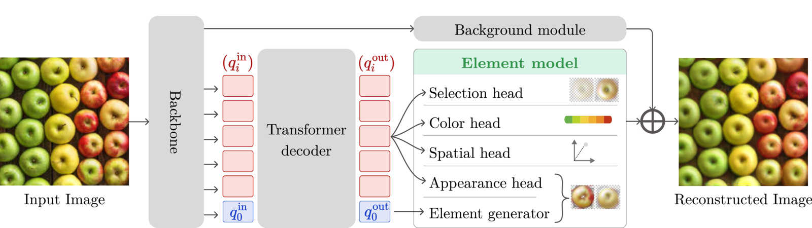
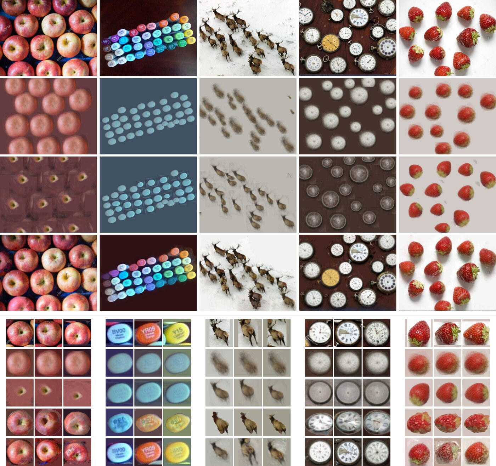
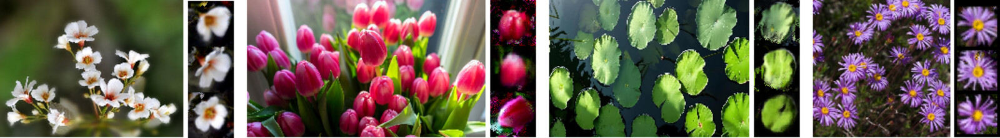

Abstract
We address the problem of discovering repeated elements from a single image. In contrast to existing approaches that depend on large annotated datasets, curated multi-image collections, or object segmentation masks, we show that a single image can suffice to learn a meaningful object model in a completely bottom-up fashion, without any prior knowledge beyond a coarse scale prior. Our method learns a tunable image-space prototype of the repeated elements through a reconstruction objective, enabling the model to identify and synthesize consistent object instances within the same image. Experiments on 116 real images from the FSC-147 dataset demonstrate that our method successfully learns coherent element models and captures intra-category variation on challenging images. Qualitative results reveal superior reconstructions and interpretable decompositions compared to classical decomposition, joint alignment, and 3D object modeling methods, while maintaining a simple 2D formulation. These results suggest that meaningful object discovery can emerge from single-image learning alone.
Contributions
- Single-image, bottom-up discovery and modeling of repeated elements — no datasets, masks, or exemplars beyond a coarse scale prior.
- A shared, tunable image-space prototype learned purely through reconstruction, capturing pose, color, and appearance variation across instances.
- An interpretable analysis-by-synthesis decomposition: every instance gets an explicit position, rotation/scale, color, and appearance code.
- Outperforms classical decomposition, joint-alignment, and 3D object-modeling baselines — while staying a simple 2D formulation.
Method
Given one input image, a backbone extracts patch features consumed by two parallel branches: a background module, and a transformer decoder over per-instance queries.

- Selection — existence probability per query
- Spatial — position, rotation, scale
- Color — per-instance color transform
- Appearance — 1-D code driving the element generator
The same reconstruction objective, plus light regularization, optimizes the whole model on the single input image.
Results
We compare to three paradigms for modeling repeated elements — averaging, joint alignment (SpaceJAM), and 3D object modeling — all given TMR+SAM detections and masks, i.e. more supervision than our method uses.
| Counting | Image recon. | Prototype | ||||||||
|---|---|---|---|---|---|---|---|---|---|---|
| Method | Ex | Sup | MAE↓ | RMSE↓ | PSNR↑ | SSIM↑ | LPIPS↓ | PSNR↑ | SSIM↑ | LPIPS↓ |
| ABC123 | ● | ● | 20.92 | 28.58 | – | – | – | – | – | – |
| GeCo | ● | ● | 7.34 | 13.66 | – | – | – | – | – | – |
| TMR | ● | ● | 4.11 | 6.82 | – | – | – | – | – | – |
| TMR+SAM+Average | ● | ● | – | – | 13.95 | 0.423 | 0.543 | 17.44 | 0.658 | 0.464 |
| TMR+SpaceJAM | ● | ● | – | – | 13.63 | 0.405 | 0.544 | 17.77 | 0.674 | 0.430 |
| TMR+SAM+3D | ● | ● | – | – | – | – | – | 15.53 | 0.568 | 0.500 |
| Ours | ● | ● | 14.11 | 26.93 | 23.76 | 0.737 | 0.242 | 19.40 | 0.700 | 0.353 |
● requires directly ● requires indirectly (via TMR) ● not required — columns: Ex exemplar/prompt, Sup supervised training.


Conclusion
Revisiting a classic vision problem with modern optimization tools, we show that meaningful object models can emerge directly from pixels — no dataset, no annotation, just one image and a reconstruction objective. The learned decomposition suggests intra-image repetition itself is a free self-supervision signal for object-centric learning.
BibTeX
@inproceedings{kalleli2026bottomup,
title = {Bottom-up Modeling of Repeated Elements via Single-Image Analysis-by-Synthesis},
author = {Kalleli, Syrine and Efros, Alexei A. and Aubry, Mathieu},
booktitle = {European Conference on Computer Vision (ECCV)},
year = {2026}
}